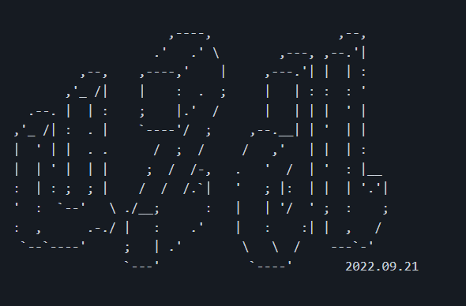

Terminal youtube video ▶️ downloader 📥
u2dl is a cli app made in python 🐍 that downloads videos from youtube. It processes and displays the streams and the user can select one from it or just type h to get the video in highest resolution. Downloaded videos can be further converted to mp3 format. You can specify the download path if you want with the --save_to or -s option.
Users in Windows can download the latest binary from releases [standalone or single executable]. Alternatively, you can clone this repo, make a new venv, activate it , run pip install -r requirements.txt and then run the app u2dl.py.
u2dl needs FFmpeg library (or just ffmpeg.exe) to convert video to mp3 format. It is recommended to keep the FFmpeg binaries along with the u2dl executable(or script) or add to system path.
You can download FFmpeg from the official site or for just the ffmpeg.exe run u2dl -f.
Try u2dl on Binder

Open a bash terminal in binder and run cd src.
Install the dependencies pip install -r requirements.txt.
Now run the app python u2dl.py
Navigate to the directory where the binary(or script) is located and run u2dl.exe.
If you encouter a false positive virus warning make the app an exception in windows virus and threat protection (or in the virus scanner you are using).
For the help message run u2dl.exe --help or simple u2dl.exe
Usage: u2dl.exe [OPTIONS] COMMAND [ARGS]...
u2dl - Terminal youtube video downloader
Home page: https://darkhound-org.github.io/u2dl/
Github: https://github.com/Darkhound-org/u2dl
Options:
-li, --license A brief info about the project license
-d, --docs Opens the documentation [in your browser]
-f, --ffmpeg Get ffmpeg.exe
--dev, --developer A brief info about the developer
--version Show the version and exit.
--help Show this message and exit.
Commands:
get
To download FFmpeg run u2dl.exe -f. You will be prompted whether to download the full library (recommended for non-Windows users) (built by BtbN) from https://github.com/BtbN/FFmpeg-Builds/releases or just the ffmpeg.exe file.
Run u2dl get --help to view the help message for get command.
Usage: u2dl get [OPTIONS]
Download single videos and playlists from Youtube
Syntax: u2dl get -l(or)-p(or)i <link> -s <path> -a(flag not valid for
playlists and info)
[Note] : When converting make sure the downloaded file is in the working
directory. Ffmpeg recquired for conversion.
[Note] : You can place Ffmpeg in the working directory or add to environment
path variable.
Options:
-l, --link TEXT Takes the Youtube url
-p, --playlist TEXT Takes the playlist url
-a, --audio Convert to high quality mp3 format. [Note] : Ffmpeg
recquired for conversion. Read docs for more details.
-s, --save_to TEXT Takes the download location [path]
-i, --info TEXT Display all available information about a Youtube video
--help Show this message and exit.
Replace < link > and < path > with the actual link and path in the below examples.
▪ Basic usage : u2dl get -l(or)--link <link>
▪ u2dl get -p(or)--playlist <link>
▪ u2dl -i(or)--info <link>
▪ u2dl -l(or)--link <link> -s(or)--save_to <path>
▪ u2dl get -l(or)--link <link> -a(or)--audio
▪ u2dl get -l(or)--link <link> -s(or)--save_to <path> -a(or)--audio